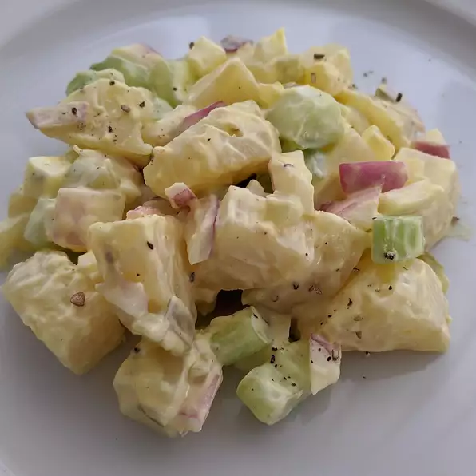

Old-Fashioned Potato Salad

There are many ways to make potato salad, but if you're looking for a traditional, mayonnaise-based potato salad made with hard-boiled eggs, celery, and a little pickle relish for zing, you've landed on the right recipe.
Ingredients
- 5 potatoes
- 3 eggs
- 1 cup chopped celery
- ½ cup chopped onion
- ½ cup sweet pickle relish
- ¼ cup mayonnaise
- 1 tablespoon prepared mustard
- ¼ teaspoon garlic salt
- ¼ teaspoon celery salt
- Ground black pepper to taste
Steps
- Bring a large pot of salted water to a boil.
- Add potatoes and cook until tender but still firm, about 15 minutes. Drain, cool, peel and chop.
- While potatoes cook, place eggs in a saucepan and cover with cold water. Bring water to a boil; cover, remove from heat, and let eggs stand in hot water for 10 to 12 minutes.
- Remove Eggs from hot water, cool, peel and chop.
- Combine the potatoes, eggs, celery, onion, relish, mayonnaise, mustard, garlic salt, celery salt, and pepper in a large bowl. Mix together well and refrigerate until chilled.